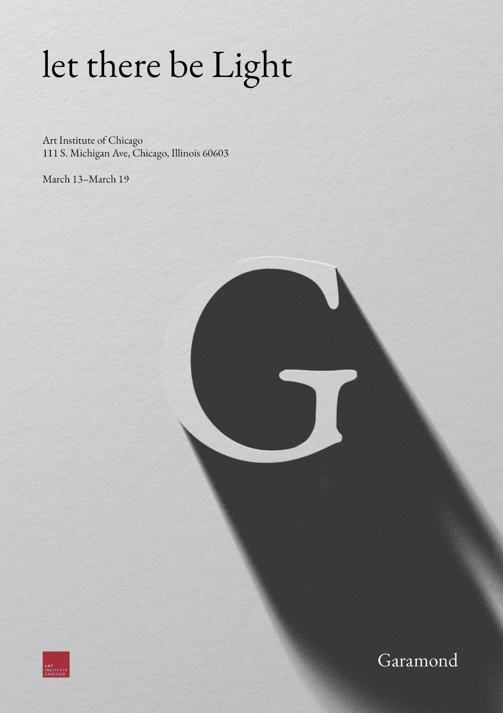
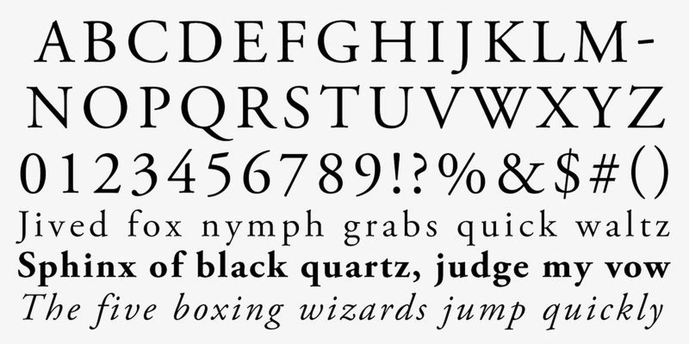
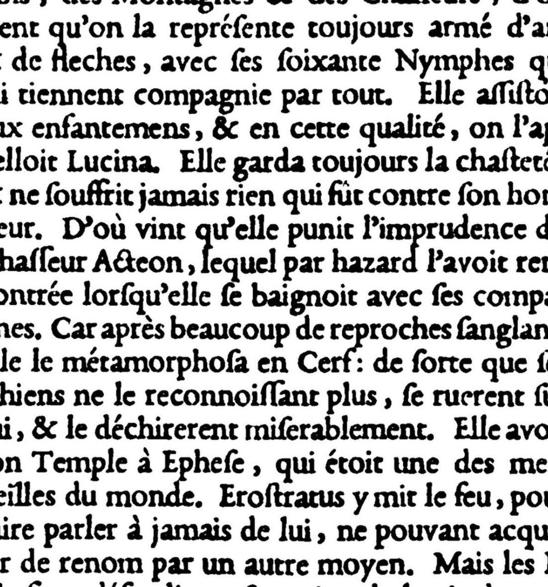
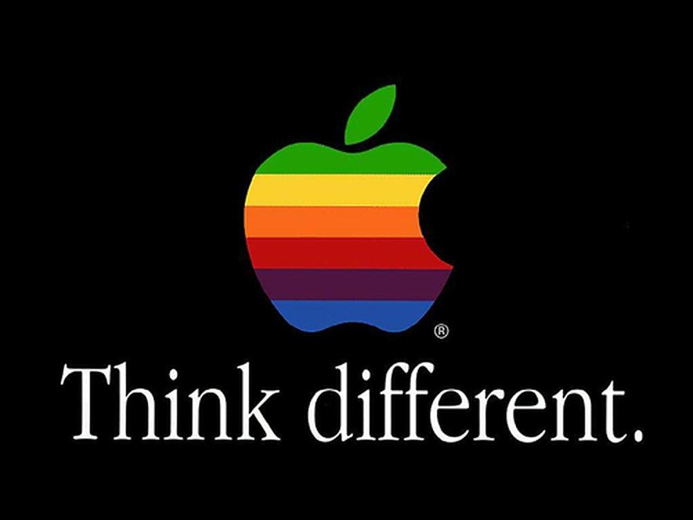

The brief was to design a poster for a typography exhibit imagined at the Art Institute of Chicago. I chose Garamond and focused on one of its most enduring qualities, its resilience through time.
Applications: Illustrator, Photoshop, Blender

This poster explores one of Garamond’s most enduring qualities: its resilience and continued relevance in design.
The brief was to design a poster for a typography exhibit imagined at the Art Institute of Chicago. I chose Garamond and focused on one of its most enduring qualities, its resilience through time.
At the heart of the poster is light. A concept older than most things in the universe and, in the Bible, the first creation. To reflect this, I created a 3D “G” in Garamond using Blender and positioned a light source to create a striking contrast between light and shadow. In the phrase “let there be Light”, only “Light” is capitalized and centered, drawing focus to its significance.
The word “Garamond” appears in white within the shadow, subtly drawing attention without competing with the main message. The exhibit’s address and location are placed in the top-left corner, aligning with the source of light and guiding the viewer’s eye along the diagonal path of the shadow. A minimal color palette reinforces the contrast between light and darkness, while a subtle paper texture references the Bible and Robert Estienne, who helped popularize Claude Garamond’s typeface.
Typeface. A Typeface that established elegance and readability from the Renaissance that continues to impact and inspire typography centuries past, that is Garamond. Garamond is a classic group of old serif typefaces considered this due to its organic structure yet upright and structured design. Garamond is also considered one of the first Old Style Designs finding its originality due to being a contemporary typeface compared to the standard Blackletter typeface. Some of Garamond’s most notable features are its smaller than average and early closed off apertures, Low Line contrast, pronounced diagonal stress, higher X-height, and serifs that are heavily bracketed and rounded on the edges.
The Garamond typeface is named after 16th-century French engraver Claude Garamond. He came to prominence around 1540 when his greek typefaces were requested by famous 16th-century French printer Robert Estienne. Claude Garamond based the Greek typefaces on the handwriting of fontainebleau’s, Angelo Vergecio. The Garamond typeface became quickly popular due to its economical ink usage and readability on those with large bodies and small text influencing European punch cutters for the next 150 years to come. Claude Garamond was one of the first to break away from the notion that type should be an adaptation of the handwritten script and this ideology may have come due to his apprenticeship with Renaissance printer Antoine Augereau who produced Roman type compared to the standard Blackletter, and later French humanist and engraver Geoffroy Tory who was best known for adding accents on letters in French. These new ideologies of typefaces perhaps came due to the flourishing Renaissance era, as well as Paris becoming Europe’s biggest printing center creating the need for a cleaner and more legible style.
Over the years many different variations of Garamond have been developed from Morris Fuller Benton and Thomas Maitland Cleland’s “The Third Version of Garamond” in 1919, all the way to 1989 from Adobe Systems Incorporated’s “Adobe Garamond Pro”. Although the Garamond typeface was inspired by Claude’s Garamond specific style the actual Garamond typeface was printed and pressed by French Protestant Printer, Jean Jannon.


In Use. Even centuries later, Garamond can still be seen all around due to its professionalism, elegance, and readability. Many books like The Hunger Games, Harry Potter, and many Dr. Seuss series use Garamond due to its excellent readability in books. Prestigious Swiss watch manufacturer, Rolex have also used the Garamond typeface due to them considering Garamond one of the most elegant typefaces that matched the branding and audience they looked for. Although the unique old-serif type style gave Garamond its notability, these are also the reason for its downside on computer screens and mobile devices due to it being hard to read in smaller sizes and lighter weights on a screen. Through this, Garamond continues to endure, its beauty and elegance transcends time, and continues to remain a powerful testament to design.

Reference images from the class research by Dahye Lee, GDVX-501.